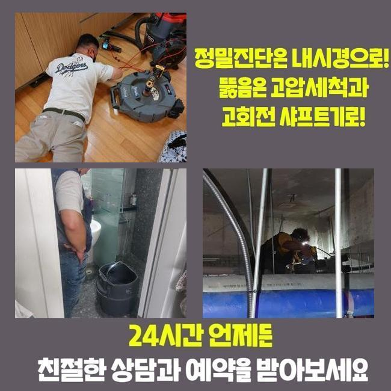
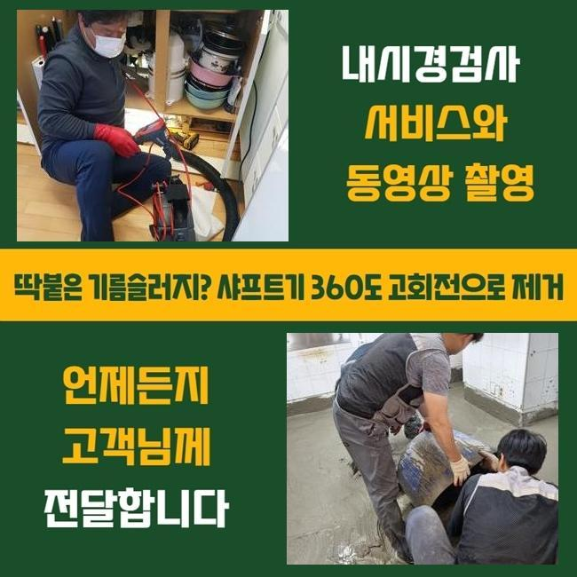
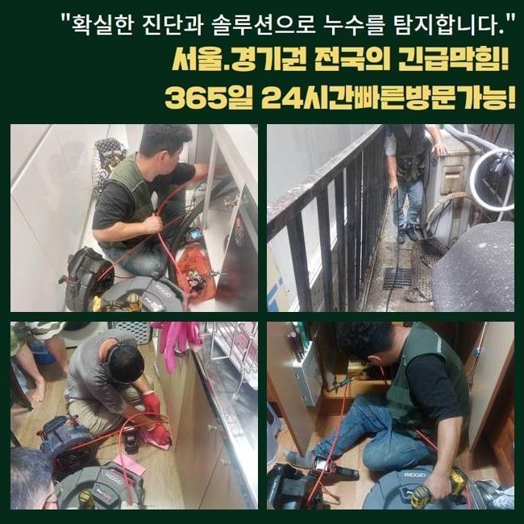
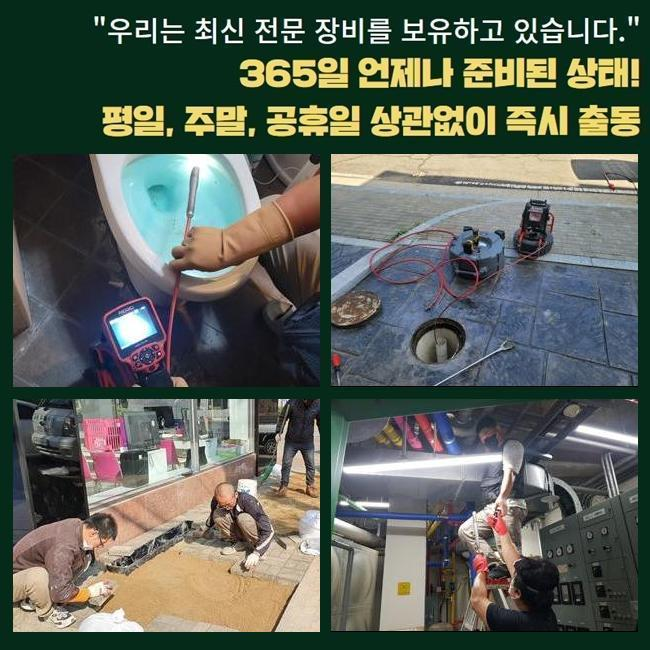
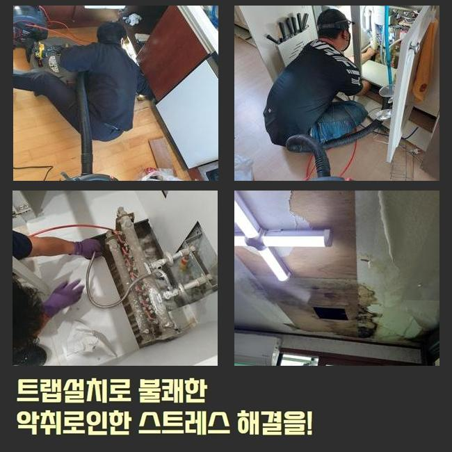
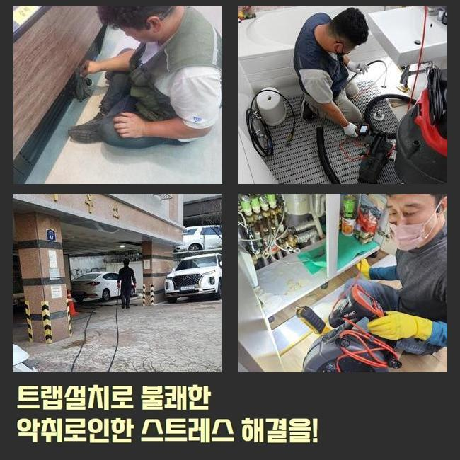

🏠 청주 하수구뚫는가격 진천 씽크대하수구막힘
용인 싱크대막힘 전문 시공 후기

📋 작업 개요
- 위치: 용인
- 서비스 유형: 싱크대막힘, 하수구막힘, 배관막힘, 역류해결, 뚫는업체, 배관청소, 고압세척
- 작업 일시: 2024. 12. 2. 8:54
- 업체명: 하수구수사대 (010-5615-2118)
🔍 문제 상황
청주 하수구뚫는가격 진천 씽크대하수구막힘
배수구에 이상들이 야기되어 막혀버리는 상황이 걷잡을 수 없단 의뢰를 통하여 정밀한 점검들을 진행코자 즉각 달려갔죠
배수설비는 간소하게 해결되지 않고 역류들이 목격되거나 냄새처럼 또 다른 피해들로 진행되는 가능성들이 다분하기에 알맞은 대응이 필요하겠습니다
문제가 분명함을 목격하셨을 땐 이왕이면 수습을 떠올려주시는게 중요한데요
더군다나 배수설비는 방치된다면 문제가 퍼지는 시간까지 빨라지기에 선제적인 대처가 중요하게 작용하는건데요
앞으로 물 순환의 비중과 파생된 문제들이 발생된 시점에서 무슨 방법으로 시정하는게 제대로 된 해결책인지 저희들이 방문드렸던 현장내용을 토대로 안내할게요
의뢰자분의 부름으로 저희업체가 달려간 장소는 집합건축물로 각 가지배수관이 중앙메인 배수관을 통하는 상태였어요
막힘이 발발해서 라인 별로 이런저런 증상이 발현되었으며 더 나아가 하단세대는 물들을 틀 수 없을뿐더러 문제가 심각수준이였습니다

🔎 원인 분석
💡 전문가 진단: 정밀 진단 장비를 사용하여 슬러지의 고착 여부를 판명하고 타격/세척 작업을 실시했습니다.
저희들은 피해규모를 걷어낼 목적으로 필요 도구들을 준비시키고 황급히 계신 곳으로 내방드렸는데요
대개 물막힘 증세는 여기저기서 야기될 수 있죠
전체적인 세대에 있어서 공용배수관을 통하기에 어느 한 구간에서 막혔을 땐 여러 세대에게 피해들을 끼칩니다
이럴 경우 서두른 해결이 배제된다면 현 상황은 점점 심해져 예기치못한 문제들을 주는데요
물들이 안내려가는 주된 까닭은 심층부에까지 존재하는 슬러지인데요
평상 시 배출되는 수도속엔 용해되지 못하는 이물들이 있는데요
예로 기름들과 음식물들은 안녹기에 하수배관 내측에서 점차 축적되요
오염원들이 한 곳에 누적되면 통로의 흐름들을 하지 못하게만들며 여러 문제들이 외부적으로도 드러나요
이러한 이러한 결함들을 마주하지 않기위해선 트랩을 새롭게 들여놓거나 때에 맞춰 배수관 전용 용액들을 써주어 청소해주는 것도 좋은데요

🔧 작업 과정
정체가 목격되었을 시 안정적인 방식은 전문업체의 조언에 따르는 것입니다
그렇지만 비용 등으로 대부분의 고객님들은 위험요소가 다분히 있는 용품들로 대처를 진행하는 현장을 많이 봐왔죠
이같은 방식들은 비장기적인 대응방식에 불과하고 덧붙여 이물을 깊숙한 지점으로 투입시켜 균열들이 발발하게 한다는 사실이겠습니다
그래서 해당 방법들은 문제의 증상을 수렁으로 빠트리니 신중히 해야 합니다
저희전문진은 해당 상황들을 근본적으로 해결하고자 내시경장비를 운용시켜 하수도를 여기저기 진찰합니다
내시경의 경우 내측을 진단할 수 있게끔하는 기기로 바깥에서 검수에 무리가 있는 심층부까지 오염물의 형태등을 손쉽게 파악하게 됩니다
이번 고객님이 계신 곳에서는 공용배관들을 선두로 하여 구간에 따라서 잔해가 자리했던 것으로 보여졌습니다
대개는 스프링기기나 샤프트기를 써서 잔해를 청소하지만 위같이 길게 막혔다면 고수압작업이 요구되는데요
고압수의 청소방법은 해당 라인에 알맞은 노즐들을 선택하여 고수압으로 하수관을 세척해주는 절차에요
고압수청소는 돌처럼 굳어진 잔여물질을 깨끗하게 제거해주며 배수관이 지속적으로 막힌 상태일 시 그 역할을 톡톡히 합니다
그러나 배수관의 내식성을 기준으로 해당 작업이 타겟이 되는 배수관에 손상이슈를 가할 수 있기에 노후도 등을 진단해보고 세척해야하는 범위별로 압력들을 조정해주는 것이 중요한 요소입니다
이러한 일련의 단계들을 이어가면 지금껏 퇴적된 오염원들이 없어지는걸 체크할 수 있어요
이물제거가 완료되면 각 구간을 내시경기기로 점검해보면 처음의 모습과는 다르게 하수관의 상태들이 확연하게 다르다는걸 관찰하게 됩니다
이처럼 각 기기들을 이용해주면 하수구 이상 증세를 수월하게 해결하게됩니다


✅ 작업 완료
저희업체는 고객님들이 물이 안빠져 곤란하시다면 조속하게 해결할 목적으로 곧장 찾아뵐 준비들을 해두었어요
증상을 인지하셨다면 주저말고 문의하시면 신속히 도와드릴게요
물이 안빠져 인한 심각성을 막고자서는 때에 맞춰 예방을 속행하는것이 가장 중요하답니다
일상 중에 배관 컨디션을 유지시키는 방식으로 막혀버리는 사태가 나타날 수 없게끔 선제적으로 대처하는게 좋겠습니다



⚠️ 주방 싱크대 배관 막힘 예방 수칙
- ✅ 기름기가 묻은 식기나 프라이팬은 설거지 전 키친타올로 반드시 기름때를 닦아내세요.
- ✅ 주기적으로 싱크대 개수대에 뜨거운 물을 가득 받아 한 번에 내려 배관 내부 기름을 씻어내세요.
- ✅ 배수구 거름망을 미세한 필터로 사용하시고 음식물 찌꺼기가 틈으로 새어 들지 않게 관리하세요.
- ✅ 베이킹소다와 식초를 뜨거운 물과 함께 일주일에 한 번씩 부어주면 배관 살균과 막힘 예방에 좋습니다.
💡 핵심 정리
- 확실한 장비 작업(내시경 점검 및 샤프트 스케일링)으로 원인을 뿌리 뽑습니다.
- 작업 후 1년 이내에 동일한 부위 재발 시 100% 무상 A/S 서비스를 보장합니다.
- 서울 · 경기 · 인천 전 지역에 24시간 언제든 긴급 출동할 수 있도록 항시 대기 중입니다.
❓ 자주 묻는 질문 (FAQ)
🚨 용인 싱크대막힘 문제로 고민이신가요?
정확한 원인 진단과 확실한 시공으로 재발 없는 해결을 약속드립니다.
24시간 긴급 출동 | 서울 · 경기 · 인천 전지역 | 1년 내 재발 시 무상 A/S